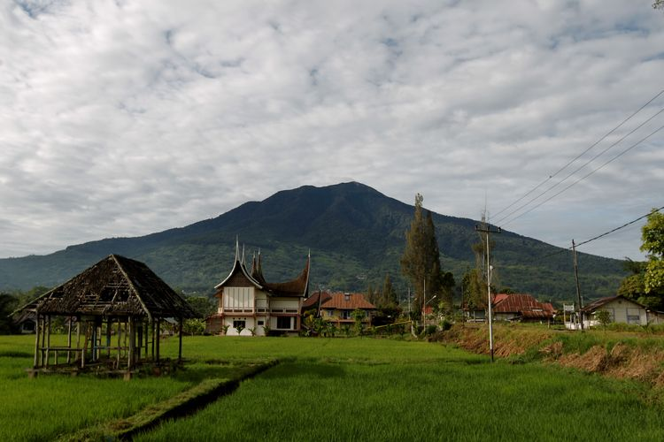

terdapat enam gunung di Sumatera Barat yang
sudah buka sejak pertengahan Juni.
Keenam gunung itu di antaranya Gunung Singgalang, Gunung Marapi, Gunung Sago,
Gunung Tandikek, Gunung Talamau, dan Gunung Talang. Adapun protokol kesehatan
yang diterapkan keenam gunung tersebut hampir sama yaitu mewajibkan pendaki
menggunakan masker, membawa hand sanitizer, mendaki dalam kondisi sehat, membawa
alat makan sendiri, dan beberapa basecamp mewajibkan pendaki membawa surat sehat.
Gunung Singgalang
Gunung Singgalang Gunung berketinggian 2.877 mdpl ini berlokasi di Kabupaten Agam,
Sumatera Barat. Gunung ini dikenal karena mempunyai telaga di puncaknya yang
merupakan bekas kawah.
Gunung Marapi
Gunung berikutnya di Sumatera Barat yang telah buka kembali pendakiannya adalah Gunung
Marapi. Gunung berketinggian 2.891 mdpl ini berada di Kabupaten Tanah Datar, Kabupaten
Agam, dan Kotamadya Padang Panjang.
Gunung Sago
Gunung Sago juga telah dibuka sejak 10 Juni 2020. Gunung ini berlokasi di Kecamatan
Lareh Sago Halaban, Luhak dan Situjuh Lima Nagari, Kabupaten Lima Puluh Kota, Sumatera
Barat.
Gunung Tandikek
Gunung Tandikek terletak di Dataran Tinggi Minangkabau, Padang Panjang, Sumatera Barat.
Gunung ini telah buka kembali sejak 10 Juni 2020.
Gunung Talang
Gunung Talang berlokasi di Kabupaten Solok, Sumatera Barat juga telah kembali buka sejak
12 Juni 2020. Jalur pendakian yang dibuka adalah via Aia Batumbuak, Kecamatan Gunung Talang,
Solok, Sumbar.
Gunung Talamau
Gunung ini juga memiliki air terjun dengan ketinggian lebih dari 100 meter, namanya Air Terjun Puti
Lenggo Geni. Pendaki biasa melewati jalur Aia Batumbuak karena tergolong ramah untuk pemula. Jika
melewati jalur ini, pendaki akan menempuh perjalanan selama sekitar empat jam.